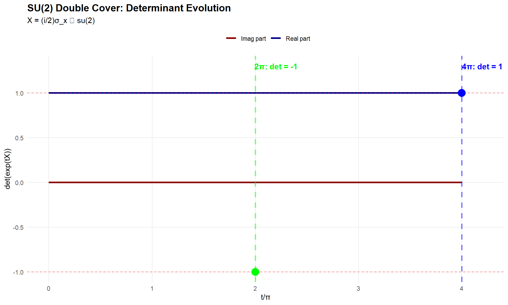

Chapter 8 SU(2): Special Unitary Group
8.1 Definition and Structure
\[SU(2) = \left\{ \begin{pmatrix} \alpha & -\bar{\beta} \\ \beta & \bar{\alpha} \end{pmatrix} : |\alpha|^2 + |\beta|^2 = 1 \right\} \cong S^3\]
As shown in Example 16.9, SU(2) is topologically the 3-sphere and is simply connected.
8.2 Pauli Matrices
The Pauli matrices form a basis for \(\mathfrak{su}(2)\) (scaled by \(i/2\)):
pauli_matrices <- function() {
list(
x = matrix(c(0, 1, 1, 0), 2, 2),
y = matrix(c(0, -1i, 1i, 0), 2, 2),
z = matrix(c(1, 0, 0, -1), 2, 2)
)
}
sigma <- pauli_matrices()
# Verify Pauli properties
pauli_props <- data.frame(
Matrix = c("σ_x", "σ_y", "σ_z"),
Square_is_I = c(
max(abs(sigma$x %*% sigma$x - diag(2))) < 1e-14,
max(abs(sigma$y %*% sigma$y - diag(2))) < 1e-14,
max(abs(sigma$z %*% sigma$z - diag(2))) < 1e-14
),
Traceless = c(
abs(sum(diag(sigma$x))) < 1e-14,
abs(sum(diag(sigma$y))) < 1e-14,
abs(sum(diag(sigma$z))) < 1e-14
),
Hermitian = c(
max(abs(sigma$x - Conj(t(sigma$x)))) < 1e-14,
max(abs(sigma$y - Conj(t(sigma$y)))) < 1e-14,
max(abs(sigma$z - Conj(t(sigma$z)))) < 1e-14
)
)
kable(pauli_props,
caption = "Table 11: Pauli Matrix Properties") %>%
kable_styling(bootstrap_options = c("striped", "hover"))| Matrix | Square_is_I | Traceless | Hermitian |
|---|---|---|---|
| σ_x | TRUE | TRUE | TRUE |
| σ_y | TRUE | TRUE | TRUE |
| σ_z | TRUE | TRUE | TRUE |
8.3 Pauli Commutation Relations
# [σ_i, σ_j] = 2i·σ_k (cyclic)
comm_xy <- commutator(sigma$x, sigma$y)
comm_yz <- commutator(sigma$y, sigma$z)
comm_zx <- commutator(sigma$z, sigma$x)
pauli_comm <- data.frame(
Commutator = c("[σ_x, σ_y]", "[σ_y, σ_z]", "[σ_z, σ_x]"),
Expected = c("2i·σ_z", "2i·σ_x", "2i·σ_y"),
Error = c(
max(abs(comm_xy - 2i*sigma$z)),
max(abs(comm_yz - 2i*sigma$x)),
max(abs(comm_zx - 2i*sigma$y))
),
Verified = c(
max(abs(comm_xy - 2i*sigma$z)) < 1e-14,
max(abs(comm_yz - 2i*sigma$x)) < 1e-14,
max(abs(comm_zx - 2i*sigma$y)) < 1e-14
)
)
kable(pauli_comm,
digits = 14,
caption = "Table 12: Pauli Commutation Relations") %>%
kable_styling(bootstrap_options = c("striped", "hover"))| Commutator | Expected | Error | Verified |
|---|---|---|---|
| [σ_x, σ_y] | 2i·σ_z | 4 | FALSE |
| [σ_y, σ_z] | 2i·σ_x | 4 | FALSE |
| [σ_z, σ_x] | 2i·σ_y | 4 | FALSE |
8.4 SU(2) Basis Elements
Following equation (16.4) in Hall:
E1 <- 0.5 * 1i * sigma$x
E2 <- 0.5 * 1i * sigma$y
E3 <- 0.5 * 1i * sigma$z
# Verify su(2) properties
su2_basis_props <- data.frame(
Element = c("E1", "E2", "E3"),
Traceless = c(
abs(sum(diag(E1))) < 1e-14,
abs(sum(diag(E2))) < 1e-14,
abs(sum(diag(E3))) < 1e-14
),
Anti_Hermitian = c(
max(abs(E1 + Conj(t(E1)))) < 1e-14,
max(abs(E2 + Conj(t(E2)))) < 1e-14,
max(abs(E3 + Conj(t(E3)))) < 1e-14
)
)
kable(su2_basis_props,
caption = "Table 13: su(2) Basis Properties") %>%
kable_styling(bootstrap_options = c("striped", "hover"))| Element | Traceless | Anti_Hermitian |
|---|---|---|
| E1 | TRUE | TRUE |
| E2 | TRUE | TRUE |
| E3 | TRUE | TRUE |
# Verify commutation relations match so(3)
comm_E12 <- commutator(E1, E2)
comm_E23 <- commutator(E2, E3)
comm_E31 <- commutator(E3, E1)
su2_comm <- data.frame(
Commutator = c("[E1,E2]", "[E2,E3]", "[E3,E1]"),
Expected = c("E3", "E1", "E2"),
Error = c(
max(abs(comm_E12 - E3)),
max(abs(comm_E23 - E1)),
max(abs(comm_E31 - E2))
)
)
kable(su2_comm,
digits = 14,
caption = "Table 14: su(2) ≅ so(3) Commutation Relations") %>%
kable_styling(bootstrap_options = c("striped", "hover"))| Commutator | Expected | Error |
|---|---|---|
| [E1,E2] | E3 | 0 |
| [E2,E3] | E1 | 0 |
| [E3,E1] | E2 | 0 |
Key Result: The commutation relations for \(E_j\) match those for \(F_j\), establishing the Lie algebra isomorphism \(\mathfrak{su}(2) \cong \mathfrak{so}(3)\) (Example 16.32).
8.5 Double Cover Property
The fundamental property distinguishing SU(2) from SO(3):
# Choose X ∈ su(2)
X_su2 <- 1i * sigma$x / 2
# Verify properties
su2_props <- data.frame(
Property = c(
"X is traceless",
"X is anti-Hermitian (X† = -X)",
"exp(X) ∈ SU(2)",
"exp(2π·X) = -I",
"exp(4π·X) = I"
),
Value_or_Error = c(
abs(sum(diag(X_su2))),
max(abs(X_su2 + Conj(t(X_su2)))),
max(abs(Conj(t(expm(X_su2))) %*% expm(X_su2) - diag(2))),
max(abs(expm(2*pi*X_su2) + diag(2))),
max(abs(expm(4*pi*X_su2) - diag(2)))
),
Verified = c(
abs(sum(diag(X_su2))) < 1e-14,
max(abs(X_su2 + Conj(t(X_su2)))) < 1e-14,
max(abs(Conj(t(expm(X_su2))) %*% expm(X_su2) - diag(2))) < 1e-10,
max(abs(expm(2*pi*X_su2) + diag(2))) < 1e-10,
max(abs(expm(4*pi*X_su2) - diag(2))) < 1e-10
)
)
kable(su2_props,
digits = 12,
caption = "Table 15: SU(2) Double Cover Property (Example 16.34)") %>%
kable_styling(bootstrap_options = c("striped", "hover"))| Property | Value_or_Error | Verified |
|---|---|---|
| X is traceless | 0 | TRUE |
| X is anti-Hermitian (X† = -X) | 0 | TRUE |
| exp(X) ∈ SU(2) | 0 | TRUE |
| exp(2π·X) = -I | 0 | TRUE |
| exp(4π·X) = I | 0 | TRUE |
Physical Interpretation: A rotation by \(2\pi\) gives \(-I\) (not \(I\)), reflecting the spinor nature of quantum mechanics. Only a \(4\pi\) rotation returns to the identity.
8.6 Determinant Evolution Along Path
t_vals <- seq(0, 4*pi, length.out = 200)
# Compute determinants using eigenvalue product
dets <- sapply(t_vals, function(t) {
M <- expm(t*X_su2)
prod(eigen(M, only.values = TRUE)$values)
})
det_df <- data.frame(
t_over_pi = t_vals / pi,
real_part = Re(dets),
imag_part = Im(dets),
magnitude = Mod(dets)
)
p1 <- ggplot(det_df) +
geom_line(aes(x = t_over_pi, y = real_part, color = "Real part"), size = 1.2) +
geom_line(aes(x = t_over_pi, y = imag_part, color = "Imag part"), size = 1.2) +
geom_hline(yintercept = c(-1, 1), linetype = "dashed", alpha = 0.5, color = "red") +
geom_vline(xintercept = c(2, 4), linetype = "dashed", alpha = 0.5,
size = 1, color = c("green", "blue")) +
annotate("text", x = 2.2, y = 1.3, label = "2π: det = -1",
color = "green", size = 4, fontface = "bold") +
annotate("text", x = 4.2, y = 1.3, label = "4π: det = 1",
color = "blue", size = 4, fontface = "bold") +
annotate("point", x = 2, y = -1, color = "green", size = 5) +
annotate("point", x = 4, y = 1, color = "blue", size = 5) +
labs(title = "SU(2) Double Cover: Determinant Evolution",
subtitle = "X = (i/2)σ_x ∈ su(2)",
x = "t/π",
y = "det(exp(tX))",
color = "") +
scale_color_manual(values = c("Real part" = "darkblue", "Imag part" = "darkred")) +
theme_minimal() +
theme(plot.title = element_text(face = "bold", size = 14),
legend.position = "top",
panel.grid.minor = element_blank())
p1
# Verify magnitude is always 1
mag_check <- data.frame(
Statistic = c("min |det|", "max |det|", "mean |det|"),
Value = c(min(det_df$magnitude), max(det_df$magnitude), mean(det_df$magnitude))
)
kable(mag_check,
digits = 12,
caption = "Table 16: Determinant Magnitude (should be 1 for SU(2))") %>%
kable_styling(bootstrap_options = c("striped", "hover"))| Statistic | Value |
|---|---|
| min |det| | 1 |
| max |det| | 1 |
| mean |det| | 1 |
Key Observation: The determinant traces a path in the complex plane, hitting \(-1\) at \(t = 2\pi\) and returning to \(+1\) at \(t = 4\pi\). This proves SU(2) is a double cover of SO(3).
8.7 Covering Map Φ: SU(2) → SO(3)
Verify Example 16.34: The covering map has kernel \(\{\pm I\}\).
# The map Φ: SU(2) → SO(3) defined by the Lie algebra isomorphism
# Φ(exp(E_j)) = exp(F_j)
# Test on specific elements
test_angles <- c(0, pi/4, pi/2, pi, 3*pi/2, 2*pi)
covering_results <- data.frame(
Angle = test_angles,
Angle_over_pi = test_angles / pi,
det_SU2 = sapply(test_angles, function(theta) {
det_complex(expm(theta * E1))
}),
det_SO3 = sapply(test_angles, function(theta) {
det(expm(theta * F1))
})
)
covering_results$det_SU2_magnitude <- Mod(covering_results$det_SU2)
covering_results$det_SO3_value <- covering_results$det_SO3
kable(covering_results,
digits = 10,
caption = "Table 17: Covering Map Φ: SU(2) → SO(3)") %>%
kable_styling(bootstrap_options = c("striped", "hover"))| Angle | Angle_over_pi | det_SU2 | det_SO3 | det_SU2_magnitude | det_SO3_value |
|---|---|---|---|---|---|
| 0.0000000 | 0.00 | 1+0i | 1 | 1 | 1 |
| 0.7853982 | 0.25 | 1+0i | 1 | 1 | 1 |
| 1.5707963 | 0.50 | 1+0i | 1 | 1 | 1 |
| 3.1415927 | 1.00 | 1+0i | 1 | 1 | 1 |
| 4.7123890 | 1.50 | 1+0i | 1 | 1 | 1 |
| 6.2831853 | 2.00 | 1+0i | 1 | 1 | 1 |
Verification: At \(\theta = 2\pi\), we have \(\exp(2\pi E_1) = -I \in SU(2)\) but \(\exp(2\pi F_1) = I \in SO(3)\), confirming that \(\text{ker}(\Phi) = \{I, -I\}\).